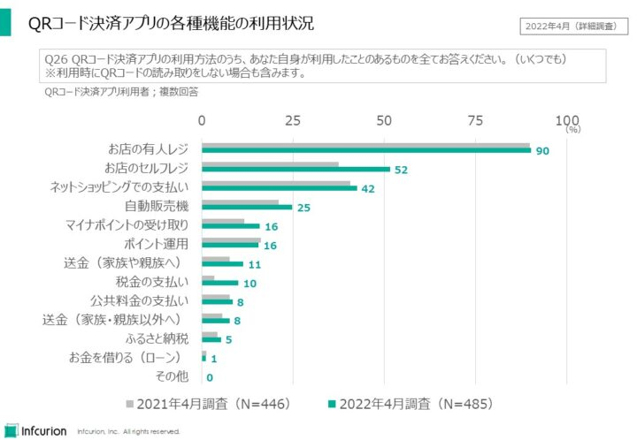
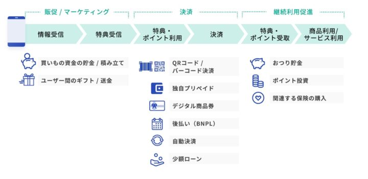

2023年・令和5年もインフキュリオン・インサイトをよろしくお願いいたします！社会のキャッシュレス化とデジタル化が急速に進行している中、デジタル金融とFintech（フィンテック）の果たす役割もますます大きくなっていっています。
社会を支える重要基盤と化したFintechにとって2023年はどのような年になるのか。10のキーワードで展望します。
目次
フルキャッシュレス社会
急速に進展している日本のキャッシュレス化。経済産業省によると2021年の「キャッシュレス決済比率」は32.5%でした。これは、クレジットカードや電子マネー、コード決済等の主要なキャッシュレス決済サービスの取扱高の合計が、民間最終消費支出の約3分の1に達したということです。2011年には14.1%だったので、10年間で18ポイント以上改善するという大きな飛躍を遂げています。
経済産業省は「2025年までにキャッシュレス決済比率4割程度」という目標を掲げてきましたが、その達成がいよいよ現実味を帯びてきています。
そして将来的な目標は「世界最高水準の80%」。そのような高い目標に向けて政府・業界が一丸となって進んでいくには、数値目標だけでは不十分です。それを達成することでどのような社会を実現したいのか、関係者でビジョンと将来像を共有していく必要があるでしょう。
そのようなビジョンの有力候補が「フルキャッシュレス社会」。これは、経済産業省が2022年9月から開催している「キャッシュレスの将来像に関する検討会」の第4回検討会資料「キャッシュレス将来像の検討会（概要版）」に記載されている言葉で、「誰もが現金を持ち歩かずに、生活が完結する社会」とされています。そして検討会では、フルキャッシュレスを実現する社会的な意義を議論しています。まさに、キャッシュレスの高みを目指すためのビジョンと将来像がかたちづくられようとしています。
経済産業省ではほかにも、中小店舗へのキャッシュレス決済のさらなる普及促進、そしてクレジットカード番号等不正利用対策の強化にも取り組んできています。キャッシュレス決済をさらに多くの店舗に広めつつ、近年増大しているクレジットカード不正利用対策を強化することで、消費者と事業者が安心してキャッシュレス決済を利用できる環境の創出に努めています。
今までは単発的にも見えていたこうした施策が、「フルキャッシュレス社会の実現に向けた取り組み」として統一的な視点で整理されていくと思われます。2023年は、日本のキャッシュレス化推進が新たな段階に入った年となるでしょう。
コード決済の金融プラットフォーム化
2015年からインフキュリオンにて定期的に実施している「決済動向調査」。その2022年4月調査において、コード決済アプリの利用率がFeliCa型電子マネーを初めて抜き去り、クレジットカードに次ぐ２位の決済サービスとなりました。2022年12月調査ではFeliCa型電子マネーとの差を広げ、2位の地位を確固たるものにしています。2018年ごろに登場した新興サービスであるコード決済が短期間にこれほど広く普及することになったことは驚きです。
決済サービスとして広く定着したコード決済ですが、店舗での買い物以外のシーンでの利用も広がっています。下の図に示すとおり、投資の入り口としての「ポイント運用」や家族・親族・友人への「送金」、「税金の支払い」や「公共料金の支払い」など、お金を動かす機能全般の利用が増えてきています。

QRコード決済アプリの各種機能の利用状況
コード決済アプリの送金機能の利用動向については、一般社団法人キャッシュレス推進協議会の「コード決済利用動向調査」も貴重な情報源です。それによると、2022年9月のコード決済アプリ送金実績は1,648万件、金額にして582億円です。平均3,500円程度の小額のやりとりに利用されていることがわかります。
店舗決済という枠を超えて、個人にとって「お金を便利に動かすプラットフォーム」として機能し始めたコード決済アプリ。2023年は、そのさらなる進展に注目です。
デジタル消費者
近年、日常的な購買行動においてスマートフォン経由でのデジタルサービスを駆使する、新たな消費者層が生まれています。われわれはこの層を「デジタル消費者」と名付けました。デジタル消費者の行動様式と整合するユーザー体験を提供していくことが、消費者向けのBtoC事業を営む全ての事業者の生き残りを左右する重要戦略となっています。
総務省「令和3年通信利用動向調査」によると日本人の83%はインターネットを利用しており、74%はスマートフォンを保有。59%は商品やサービスの購入にインターネットを利用しています。インターネットとスマートフォンを経由した買い物行動は既に広く定着しています。
しかしデジタル消費者は単にネットショッピングやコード決済が得意なだけではありません。我々の「決済動向調査」によると、日本の消費者の57%がコード決済の利用者ですが、それを上回る67%はお店が独自に提供するアプリ（お店アプリ）を利用しているのです。お店が用意したデジタルチャネルでお店と直接繋がることを望むデジタル消費者の姿が浮き彫りになっています。
そしてデジタル消費者が求めるのは「シームレスな購買体験」。来店～購買～再来店がスムースに繋がった心地よい体験です。そして、買い物には必ず決済や買い物資金の準備といった金融機能が絡みます。シームレスな購買体験の実現には、金融機能を組み込んだ（embedした）アプリが有効です。ここで、金融業者がAPI経由で提供する金融機能を組み込む取り組みであるEmbedded Finance（エンベデッドファイナンス、組み込み型金融）が意義をもちます。
デジタル消費者に訴求するシームレスな体験を、Embedded Financeを用いて実現している事業者は既に幾つも出現しています。2023年もEmbedded Financeの活用事例は増え続けていきます。

よりよいユーザー体験を実現するEmbedded Finance（インフキュリオン・レポート vol.1 より抜粋）
関連情報
- インフキュリオン・レポート vol. 1、「【無料ダウンロード】Embedded Financeの基礎知識・トレンドを解説」、2022年10月5日
SaaS×BaaS+Fintech
SaaSとはSoftware-as-a-Serviceのことで、購入／所有して利用するのではなく、利用料を支払ってネット経由で利用する形態のソフトウェアサービスのことです。大きく分けて、汎用的な「ホリゾンタルSaaS」と特定業種に特化した「バーティカルSaaS」があります。Salesforce.comやSlack、ZoomはホリゾンタルSaaSの例、建設業界の助太刀や飲食業向けの米ToastなどはバーティカルSaaSということになります。
著名な米VCアンドリーセンホロウィッツ（a16z）は2020年8月のブログ記事「Fintech Scales Vertical SaaS」で、バーティカルSaaSとFintechは極めて相性が良いことを指摘しました。SaaSの業務機能は、決済・支払・請求・給与・保険などの金融機能に支えられてこそ活きるもの。業務機能が幾ら出来がよくとも、決済や支払の場面でインターネットバンキングや別のアプリを立ち上げていては利用導線はブツ切れになりますし、金流データを迅速に連携しなければ業務プロセスまでブツ切れてしまいます。
上記のa16zの記事は、今まで見過ごされていたバーティカルSaaSの成長性に光を当てるものですが、同じロジックはホリゾンタルSaaSにも当てはまります。SaaSはそもそもFintechと相性がよいのです。
株式会社LayteXの福島良典氏はこの組み合わせを「SaaS＋Fintech」と表現しています。われわれとしてはさらに、SaaSにおける金融機能の組み込みはAPIを介したリアルタイム連携が前提である点にも重視しています。つまりBanking-as-a-Service（BaaS）を活用した「SaaS×BaaS+Fintech」が今後の勝ちパターンとなってゆくと見ています。
以下は「SaaS×BaaS+Fintech」の事例の一部です：
- 株式会社LyaerXの「バクラク」
- クラウドキャスト株式会社の「Staple」
- 株式会社マネーフォワードの「マネーフォワード ビジネスカード」
BaaSとFintechで企業DXを加速してゆく取り組みである「SaaS×BaaS+Fintech」は2023年も力強さを増していきます。
参考記事：
- インフキュリオン・インサイト、「「BaaS + Embedded Finance」による生活・ ビジネス両分野での革新」、2022年1月24日
- 福島良典 （LayerX）、「SaaS+Fintechは第4世代のソフトウェアビジネスモデル」、2022年8月12日
超小口送金
2022年10月、新たな送金サービスである「ことら」が稼働しました。大手銀行5社が開発を主導したもので、スマートフォンから安価に少額送金できるように設計されています。
2015年ごろから世界中で始まったFintech。諸外国では「送金」で様々なサービスが生まれましたが、日本では送金分野ではほぼ動きがありませんでした。銀行口座保有率が高く、全銀ネット経由でのリアルタイム振込が既に定着している日本では、送金分野で新サービスを成功させるのが難しかったというのも要因のひとつでしょう。
完成度の高い日本の「銀行振込」ですが、隠れた課題もありました。送金相手の銀行と支店、口座番号まで特定しなければ送金できないこと、そして振込手数料が諸外国に比べてかなり高い水準にあったことです。1000円程度のカジュアルな送金には銀行振込は不向きで、そうした「超小口送金」は現金手渡しで行われることが多々あります。
もともと日本の銀行振込は1億円を超えるような企業間の送金を念頭に設計されたものです。1億円未満の送金が「小口送金」と区分されるほどで、個人間の数千円程度の「超小口送金」はメインのユースケースではありません。諸外国が、そのような超小口送金用のインフラを構築していく中、日本の個人の送金ニーズは置き去りにされてきた感があります。
ついに登場した「ことら」は、眠っていた個人間の超小口送金ニーズの受け皿となりうる可能性を秘めています。家族や友人間のカジュアルな送金だけでなく、習い事や個人間売買など小規模ビジネスにおける送金にも適しています。
ただ、「ことら」の登場は遅かったかもしれません。上で述べたとおり、既にコード決済アプリでの送金利用が拡大しています。2022年9月には1,648万件、582億円が処理されました。PayPayなど強力なサービスが育った後で「ことら」は登場したことになります。
また、気になる海外事例もあります。英国の「Paym」です。同国の大手銀行が協力して2014年にスタートさせた超小口送金サービスで、スマートフォンから携帯電話番号宛に送金できる点などは「ことら」のサービスとかなり似通っています。世界でも画期的なサービスを当時は注目を浴びたPaymですが、2023年にサービス終了となってしまいます。理由は、Fintech事業者による競合サービスも続々と投入される中で利用が減少したこと、決済テクノロジーへの追随も困難であること、とのことです。
始まったばかりの「ことら」と超小口銀行送金。2023年のスタートダッシュでユーザー獲得と定着化がどこまで進むか、注目です。
銀行フィンテック
2015年ごろにFintechが国内でも話題になり始めた頃、「Fintechは銀行や既存金融事業者の脅威ですか？」との質問が多く聞かれました。
デジタル消費者の求めるユーザー体験（UX）を提供する能力にFintechスタートアップが秀でるのは事実ですが、それだけで事業的な成功が得られるとは限りません。
もし銀行や既存金融機関が、技術と社会の潮流に合わせて変革していくことができれば、信頼できるブランドと法令順守体制を持つ既存プレイヤーのほうにむしろ勝機があると、我々は常々主張してきました（例えばこちらの2021年の振り返り記事）。
そして現在の動きを見ると、国内の銀行業界はまさに自らの持つポテンシャルを活かしながらFintechをも取り込んでいっているように見えます。
まず、銀行口座の利便性向上。スマートフォンから携帯電話番号宛に安価に送金できる「ことら」の開始や、銀行口座間送金の「全銀システム」へのFintech企業の加盟解禁は、ユーザーから見ると銀行口座利用法の拡大となります。銀行の強みである「預金口座」がますます便利になっていきます。
銀行口座残高を原資とするカード決済である国際ブランドデビットカード（ブランドデビット）も好調です。当社の「決済動向2022年4月調査」の利用率は15%。年齢階層別でみると10代では18%、20代では22%と若年層で支持が広がっています。クレジットカード保有する以前からブランドデビットを利用開始するユーザーも多いと見られ、リテールバンキング強化に取り組んできた銀行に朗報です。
最近大いに盛り上がっている非クレジットカードの後払いサービスであるBNPL（Buy Now, Pay Later）。ネットプロテクションズやPaidyなど既存の決済業界の枠組みの外で成長した新興企業によるサービスが目立っていましたが2022年末、三菱UFJ銀行がカンム買収でBNPLに参入しました。
ネット銀行も勢いがあります。東京商工リサーチによると、ネット銀行をメインバンクにしている企業は2022年に3446社と、10年間で5倍に増えています。第二地銀や信金に匹敵する水準に届きつつあり、もはや無視できない強力な勢力となりつつあります。
「ネオバンク」ブランドでEmbedded Finance事業を展開する住信SBIネット銀行の「高島屋ネオバンク」、東京きらぼしファイナンシャルグループのデジタルバンク「UI銀行」など、先進的な銀行による取り組み事例も続々と出現しています。
2023年も、銀行フィンテックは期待大です。
デジタル給与
「2019年フィンテックの8大キーワード」という記事で「お給料のもらい方が変わる？」と取り上げて以来3年が過ぎました。来るぞ来るぞと何度も取り上げておいても、なかなか実現していなかった有識者泣かせの施策が、遂に来ます。
参考情報：
- 厚生労働省、「資金移動業者の口座への賃金支払（賃金のデジタル払い）について」
労働者の給与は現金払いが原則。現在もっとも一般的な給与支給方法である銀行振込は、実は法的には例外的な位置づけとなっています。2022年11月、厚生労働省は労働基準法の省令を改正し、ここに資金移動業者の口座への入金も給与支給方法として認められることになりました。2023年4月には申請の受付が始まり、厚労省の審査を経て実サービスが始まるのは秋ごろと見られています。
銀行振込で給与を受け取っている人のなかには、「別に銀行振込で十分では？」と思われる人も多いかもしれません。しかし一般社団法人Fintech協会が2021年3月に実施したインターネット調査では以下のような隠れたニーズが浮き彫りになりました：
- 給与所得のある人の58%は現在の給与受け取り方法に不便を感じており、特に現金化して利用する際の不便さが上位に来ている
- 40%の人は新たな給与受け取りの選択肢を歓迎
- 36%の人はデジタル給与について「銀行口座受け取りをメインとしながらの併用が広まる」と予想
- 25%の人は「給与の一部を『デジタル給与受け取り（仮）』で受け取りたいと回答
デジタル給与の受け皿としてもっとも有力なのは、資金移動業者として登録済のコード決済事業者です。プリペイド残高方式が主流のコード決済では、ユーザーに常時残高を維持してもらうことが利用拡大に必要です。定期的に給与の一部が入金されるとなれば、ユーザー囲い込み効果は絶大でしょう。
銀行口座に、日本の給与の大部分が振り込まれる状況は大きく変わるはずがありませんが、ユーザーと給与の付き合い方はひとつ広がりを見せることになります。銀行はどのように口座利便性を高めていくのか？資金移動業者は給与の受け皿のひとつとしての魅力をどう高めていくのか？2023年からサービス品質での新たな競争が始まります。
キャッシュレスの費用対効果
将来的にキャッシュレス決済比率80%を目指している日本。「フルキャッシュレス社会」という新たなビジョンも生まれつつあります。しかし店舗側、特に中小規模の店舗にとっては、キャッシュレス対応のコストが気になるところです。
カード決済の手数料については、公正取引委員会が2019年に調査報告を公表し、それを受けるかたちで経済産業省が手数料の開示や手数料水準の妥当性に関して議論を行ってきました。そして2022年11月、Visa・Mastercard・銀聯の大手国際ブランド3社の手数料の標準料率が公表となりました。決済手数料の透明化が進み中、NTTデータは決済ネットワーク「CAFIS」の手数料の引き下げを公表しました。
手数料はただ下げればよいというわけではありません。キャッシュレス決済によって店舗が受益するならば、相応の費用負担が発生するのは当然のことです。ただ、今までは費用対効果に関する議論が薄かったことは否定できないでしょう。
今回、決済サービスの提供サイドでコストの透明化や引き下げが進みました。決済サービスを利用する店舗や消費者の側でも、キャッシュレス決済による利便性や店舗運営コストの削減効果、さらには決済データの循環による社会の効率化といった便益の議論が深まってゆくと思われます。
デジタル通貨
最近のデジタル通貨の話題と言えば、なんといっても米FTXの破綻。その余波はまだ続いています。位ニュースではありますが、その日本法人であるFTXジャパンは金融庁の規制に従って顧客からの預かり資金の分別管理等がなされており、不正流用等の問題はなかった模様。暗号資産の規制制度を考えるうえでの重要な事例ともなりました。
2023年のデジタル通貨関連動向で大きいものは、ステーブルコイン規制を盛り込んだ改正資金決済法の施行。取扱いの詳細は2023年に定めるガイドラインに盛り込まれる見通しです。国内発行のステーブルコインについては発行総額の資産保全の義務付け、海外発行のステーブルコインは国内流通業者に資産保全を義務付けるなど、顧客保護の方向性を明確に打ち出す方向です。海外発の暗いニュースが世界を覆う中、安心して利用できるステーブルコインを指向する法制度の導入の意義は大きいと感じます。
また、日本銀行が取り組む「デジタル円」も動きがあります。2023年春にも、メガバンクを含む民間銀行と協力した実証実験を行うとのこと。ただ、実験は2年間ほど続けるとし、「デジタル円」の発行可否はその後2026年にも判断するとのことです。現時点では「デジタル円」の発行は確定していません。
デジタル証券／セキュリティトークン（STO）
ブロックチェーンを用いて実現される分散台帳は、多数のステークホルダーで共有可能でありながら、改ざんが基本的に不可能という特徴をもっています。ブロックチェーンと分散台帳のユースケースといえばビットコインなど暗号通貨が有名ですが、不動産などの資産価値を裏付けとする有価証券である「デジタル証券」（セキュリティトークン、STO）の転々流通とも高い親和性を持っています。
2022年中にはデジタル証券を用いたサービス事例が続々と報道されました。そのうち幾つかを列挙します：
- 温泉旅館を投資対象とするデジタル証券（みずほ信託銀行など）
- 社債型STOを用いた環境債（日本取引所グループなど）
- デジタルアセット市場における“ナショナルインフラ”構築に向けた、合弁会社設立に関する共同検討の開始（NTTデータ、３メガバンク、日本取引所グループなど）
- エポスカード会員向けデジタル社債（丸井グループ）
権利移転、資産運用の新たな姿としてのデジタル証券／セキュリティトークン（STO）の存在感は2023年中もさらに大きくなっていく方向です。


{kind=link}
{kind=link}
{kind=link}